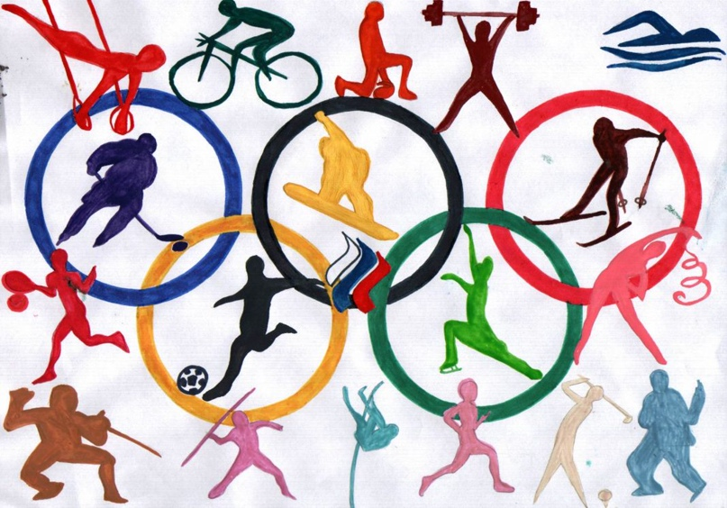

Летние виды спорта:
Олимпийские виды спорта
 В программу современных Олимпийских игр входят 28 летних (42 дисциплины) и 7 зимних (15 дисциплин) видов спорта. При классификации видов спорта МОК следуют принципу «одна федерация — один вид спорта».
Легкая атлетика
На протяжении всей известной истории спорта люди занимались атлетикой. Первым видом на Олимпиадах в Древней Греции был бег на одну стадию, то есть примерно на 192 метра. Имена победителей в этой дисциплине известны с 776 года до нашей эры. Как и сегодня, Олимпийские игры включали разнообразные виды спорта. Например, бег на более длинную дистанцию, бег в доспехах, кулачный бой и пентатлон – пятиборье, состоящее из бега на одну стадию, прыжка в длину, метания диска, метания копья и борьбы. В Древней Греции также устраивали Истмийские, Немейские и Пифийские игры. В Европе многие ярмарки развлекали зрителей соревнованиями по бегу, прыжкам и метанию. В Ирландии и Шотландии из них выросли Телтаунские игры и Игры горцев. В XVIII и XIX веках, особенно в Великобритании, существовала традиция «пеших» соревнований. На состязания по ходьбе и бегу даже принимали ставки.
Плавание
В древности люди учились плавать, чтобы пересекать реки и озера. Старейшие наскальные изображения пловцов датируются Каменным веком. Плавание также упоминается в греческой мифологии. Широкое распространение плавания как вида спорта началось только в XIX веке, когда Национальное общество плавания Великобритании стало проводить соревнования. Поначалу спортсмены плавали брассом или его разновидностями. Взяв основу кроля у южноамериканских индейцев, в первой версии этого вида европейцы били ногами в горизонтальной плоскости. В конце 80-х годов XIX века англичанин Фредерик Кавилль отправился в страны южной части Тихого океана, где познакомился с вертикальными ударами «ножницами», которые используются сегодня. Кавилль поселился в Австралии и разработал стиль плавания, который назвали австралийским кролем.
Борьба
В вольной борьбе можно использовать руки и ноги, разрешены захваты выше и ниже пояса. Старейший вид спорта. Борьба - это самый древний вид спорта, за исключением легкой атлетики. Наскальные рисунки с изображением борцов датируются 3000 лет до нашей эры. Борьба появилась на античных Олимпийских играх в 708 году до нашей эры, сразу же после первого упоминания этого вида спорта в исторических источниках.
Скейтбординг
Скейтбординг дебютирует в программе Олимпийских игр-2020 в Токио. Соревнования пройдут в парке «Ариакэ Урбан Спортс».
Дисциплины парк и стрит
Соревнования по парку состоят из двух этапов: предварительного раунда и финала.
В предварительном раунде 20 скейтеров ведут борьбу в четырех квалификационных сессиях по пять человек в каждой. Обладатели восьми лучших результатов в общем зачете выходят в финал.
В каждом раунде участник совершает три 45-секундных заезда. Пять судей выставляют за каждый заезд оценки от 0 до 100. Наибольшая и наименьшая не учитываются. Из трех других вычисляют итоговый средний балл за каждый заезд с округлением до сотых долей.
За итоговый результат раунда берут результат лучшего заезда. Соревнования по стриту также состоят из двух этапов: предварительного раунда и финала.
В предварительном раунде 20 скейтеров ведут борьбу в четырех квалификационных сессиях по пять человек в каждой. Обладатели восьми лучших результатов в общем зачете выходят в финал.
В каждом раунде участник совершает два 45-секундных заезда и пять трюков. Пять судей выставляют за каждый заезд и трюк оценки от 0 до 10. Наибольшая и наименьшая не учитываются. Из трех других вычисляют итоговый средний балл за каждый заезд и трюк с округлением до одной десятой.
Чтобы получить итоговый результат за раунд, суммируют четыре лучших результата в заездах и трюках.

Наверх
Telegram